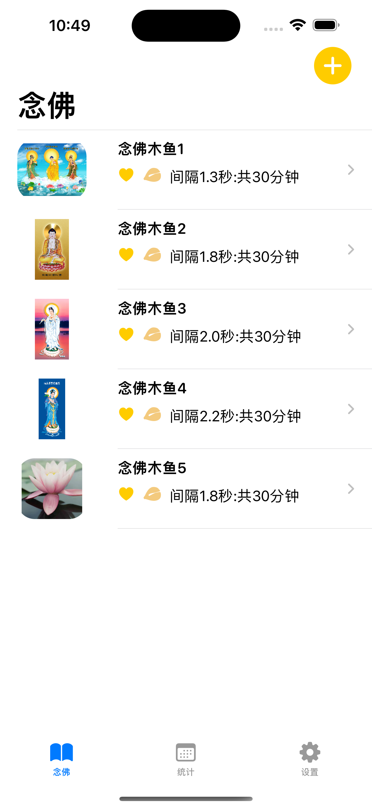
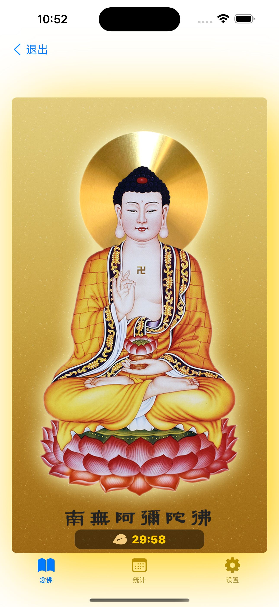
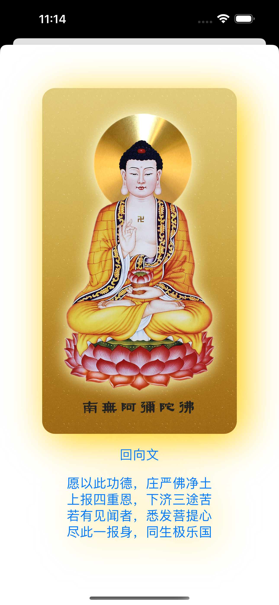
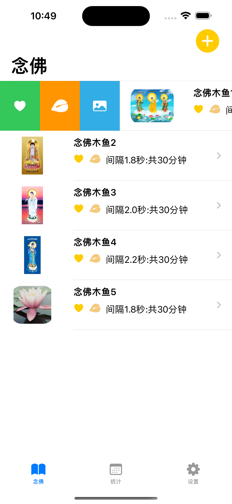
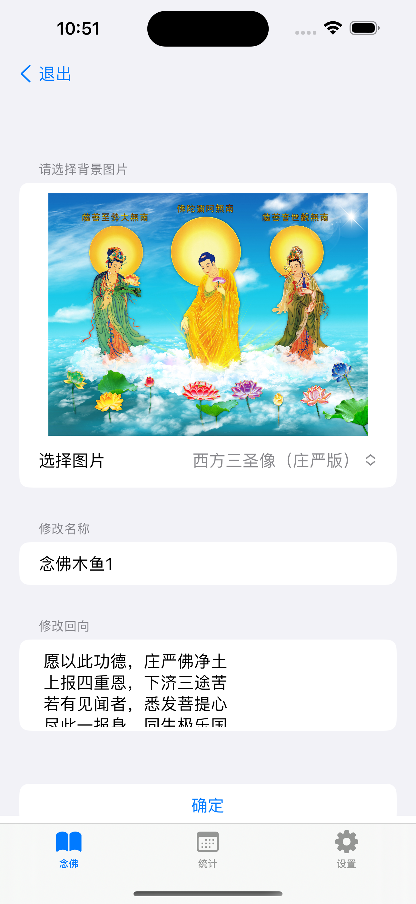

按照时间间隔、时长或总次数定制木鱼类型
Customize wooden fish types by time interval, duration, or total count
帮助佛友念佛，念观世音菩萨圣号，或地藏王菩萨圣号等
Help Buddhists recite Buddha's name, Guanyin Bodhisattva's name, or Ksitigarbha Bodhisattva's name
也可以作为打坐背景音乐
Can also be used as background music for meditation
统计佛友功课完成情况
Track Buddhist practice completion status
支持各种iPhone和iPad设备
Supports various iPhone and iPad devices
完全免费，无内购
Completely free, no in-app purchases
念佛助手 - 帮助你在念佛时保持专注
念佛助手是一款专为佛友设计的工具，帮助你在念佛时保持专注。 它提供了定制木鱼类型、更换背景图片、作为打坐背景音乐和功课统计等功能， 让你的念佛修行更加专注和有效。
版本：1.2.1
开发者：学辉 杨
佛友、修行者、希望通过念佛来培养专注力的人士
在应用中，你可以按照时间间隔、时长或总次数来定制木鱼类型， 根据自己的修行需求进行设置。
在应用设置中，你可以选择不同的背景图片， 帮助你在念佛时更加专注。
您可以通过邮件联系开发者：yangxuehui@outlook.com 或在技术支持网站留言获取帮助。
NianFo Assistant - Stay focused during mantra recitation
NianFo Assistant is a tool designed specifically for Buddhists to help you stay focused during mantra recitation. It provides functions such as custom wooden fish types, changeable background images, meditation background music, and practice statistics, making your mantra practice more focused and effective.
Version: 1.2.1
Developer: 学辉 杨
Buddhists, practitioners, individuals who want to cultivate concentration through mantra recitation
In the app, you can customize wooden fish types by time interval, duration, or total count, according to your practice needs.
In the app settings, you can select different background images to help you stay more focused during mantra recitation.
You can contact the developer via email: yangxuehui@outlook.com or leave a message on the technical support website for help.